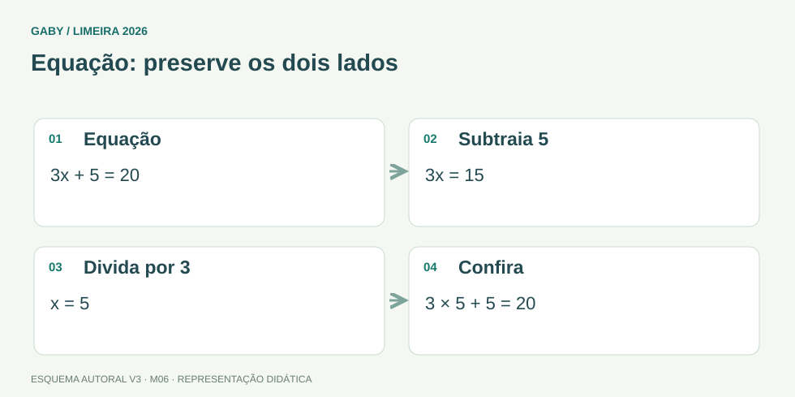

Objetivos do módulo
- Resolver equações do 1º grau.
- Traduzir problemas para linguagem algébrica.
- Resolver sistemas por substituição ou eliminação.
- Resolver equações com frações, decimais e incógnita no denominador, respeitando a condição de existência.
- Reconhecer equação impossível e identidade e conferir se a solução cabe no contexto do problema.
- Montar equações para problemas de idades, ponto de equilíbrio, tarifas, misturas, dois tipos de item e encontro de móveis.
- Classificar sistemas (SPD, SPI, SI), relacioná-los às retas e achar o parâmetro que torna o sistema impossível ou indeterminado.
Equação: preserve os dois lados

Descrição em texto do esquema
- Equação: 3x + 5 = 20
- Subtraia 5: 3x = 15
- Divida por 3: x = 5
- Confira: 3 × 5 + 5 = 20
Oficina visual · aplique o esquema
Resolva o sistema x + y = 10 e x − y = 4.
Atividade autoral complementar da V3. Registre sua resposta; a resolução está no arquivo de gabarito e revisão.
1. Equação como equilíbrio
Uma equação afirma igualdade. Qualquer operação feita em um lado deve ser feita no outro. A meta é isolar a incógnita preservando a equivalência.
2. Distributiva e redução
Remova parênteses com distributiva, junte termos semelhantes e só depois isole x. Cuidado com sinal negativo antes de parênteses.
3. Problemas
Defina a incógnita em uma frase (“x = número de documentos”), traduza as relações e, no final, verifique se a solução atende ao contexto.
4. Sistemas 2×2
Em substituição, isole uma variável e substitua na outra equação. Em eliminação, some ou subtraia equações para cancelar uma variável. Escolha o método mais simples.
Aprofundamento 1 — Propriedades da igualdade e casos especiais
Uma equação do 1º grau tem dois membros: o que está à esquerda e o que está à direita do sinal de igual. Resolver a equação é encontrar o valor da incógnita que torna os dois membros iguais. Para isso, trocamos a equação por outras mais simples que têm a mesma solução (equações equivalentes).
As duas propriedades que permitem isolar x
- Somar ou subtrair o mesmo número (ou o mesmo termo, como 2x) nos dois membros não muda a solução.
- Multiplicar ou dividir os dois membros pelo mesmo número diferente de zero também não muda a solução.
Cada passo usa a operação inversa da que está "prendendo" o x: o que está somado sai subtraindo; o que está multiplicando sai dividindo. O famoso "passar para o outro lado" é só um atalho para essas propriedades. Quem entende o atalho não erra o sinal: o termo "passa" com a operação inversa porque foi feita a mesma operação nos dois membros.
| O que prende o x | Operação nos dois membros | Exemplo |
|---|---|---|
| + 9 | subtrair 9 | x + 9 = 15 → x = 6 |
| − 4 | somar 4 | x − 4 = 10 → x = 14 |
| × 5 | dividir por 5 | 5x = 35 → x = 7 |
| ÷ 3 | multiplicar por 3 | x/3 = 8 → x = 24 |
Equação com decimais
Multiplique todos os termos dos dois membros por 10 (ou 100, se houver duas casas decimais). A vírgula some e a solução é a mesma. Exemplo: 0,3x − 0,5 = 1,6. Multiplicando tudo por 10: 3x − 5 = 16. Somando 5: 3x = 21. Dividindo por 3: x = 7. Conferência: 0,3 × 7 − 0,5 = 2,1 − 0,5 = 1,6.
Sinal de menos antes dos parênteses
O menos antes dos parênteses multiplica cada termo de dentro por −1: troca o sinal de todos eles. Exemplo: 9 − (3x − 4) = 2x + 3 vira 9 − 3x + 4 = 2x + 3, ou seja, 13 − 3x = 2x + 3. Somando 3x e subtraindo 3 nos dois membros: 10 = 5x, logo x = 2. Conferência: 9 − (6 − 4) = 7 e 2 × 2 + 3 = 7.
Número pensado: desfazer as operações
"Pensei em um número, multipliquei por 2, somei 6 e dividi o resultado por 4. Obtive 5." Há dois caminhos.
- Desfazer na ordem inversa, com a operação inversa: 5 × 4 = 20; 20 − 6 = 14; 14 ÷ 2 = 7.
- Montar a equação: (2x + 6)/4 = 5. Multiplicando por 4: 2x + 6 = 20; logo 2x = 14 e x = 7.
O erro comum é desfazer na ordem em que as operações foram feitas. A última operação feita é a primeira a ser desfeita.
Parâmetro: quando a solução já é conhecida
Às vezes o enunciado informa a solução e pergunta um coeficiente (um parâmetro, como k). Substitua x pelo valor dado e resolva a equação em k. Exemplo: para que x = 3 seja solução de kx − 5 = 7, faça 3k − 5 = 7; então 3k = 12 e k = 4. Atenção: a resposta é o valor de k, não o de x.
Equação impossível e identidade
Depois de reduzir, toda equação do 1º grau fica na forma a × x = b. Dividir por a só é permitido se a for diferente de zero. Quando o coeficiente de x se anula, há dois casos.
| Forma reduzida | Conclusão | Exemplo |
|---|---|---|
| a × x = b, com a ≠ 0 | uma única solução: x = b/a | 4x = 12 → x = 3 |
| 0 × x = b, com b ≠ 0 | equação impossível: nenhuma solução (S = ∅) | 3(x − 2) = 3x + 1 → 3x − 6 = 3x + 1 → 0x = 7 |
| 0 × x = 0 | identidade: infinitas soluções; todo número real serve | 4(x + 1) − x = 3x + 4 → 3x + 4 = 3x + 4 → 0 = 0 |
Quando o coeficiente tem uma letra, analise o valor que o anula. Em (m − 5)x = 10: se m ≠ 5, x = 10/(m − 5) (com m = 7, x = 5); se m = 5, fica 0x = 10, impossível. Já em (m − 5)x = m − 5, com m = 5 fica 0x = 0, uma identidade. Dividir por m − 5 sem olhar esse caso seria dividir por zero.
Aprofundamento 2 — Equações com frações e incógnita no denominador
Frações: multiplique todos os termos pelo MMC
Quando a equação tem frações, calcule o MMC (mínimo múltiplo comum) dos denominadores e multiplique todos os termos dos dois membros por ele. Cada denominador se cancela e sobra uma equação sem frações.
- Ache o MMC dos denominadores.
- Multiplique cada termo pelo MMC, inclusive os termos sem fração e os do outro membro.
- Ponha parênteses nos numeradores com mais de um termo antes de distribuir.
- Resolva e confira na equação original.
Exemplo: (x + 2)/4 − (x − 1)/6 = 2. O MMC de 4 e 6 é 12. Multiplicando tudo por 12: 3(x + 2) − 2(x − 1) = 24. Distribuindo, com atenção ao menos antes do segundo parêntese: 3x + 6 − 2x + 2 = 24. Então x + 8 = 24 e x = 16. Conferência: 18/4 − 15/6 = 4,5 − 2,5 = 2.
Com x nos dois membros, o método é o mesmo. Em x/3 + 4 = x/5 + 6, o MMC é 15: 5x + 60 = 3x + 90; logo 2x = 30 e x = 15. Conferência: 5 + 4 = 9 e 3 + 6 = 9.
Fração de uma quantia
"Gastar 3/5" de uma quantia x deixa 2/5 de x, porque x − 3x/5 = 2x/5. Exemplo: uma pessoa gasta 3/5 do que tem, depois gasta mais R$ 30 e fica com R$ 50. A equação é 2x/5 − 30 = 50. Somando 30: 2x/5 = 80. Multiplicando por 5 e dividindo por 2: x = 200. Conferência: 200 − 120 − 30 = 50.
Incógnita no denominador: condição de existência
Em toda fração, o denominador precisa ser diferente de zero. Por isso, quando a incógnita está no denominador, o primeiro passo é escrever a condição de existência: os valores que zeram algum denominador ficam proibidos.
- Escreva a restrição (por exemplo, x + 2 ≠ 0, isto é, x ≠ −2).
- Multiplique os dois membros pelo denominador (ou multiplique cruzado numa proporção).
- Resolva a equação obtida.
- Confira se a resposta respeita a restrição. Valor proibido é descartado.
Exemplo 1: (2x + 3)/(x + 2) = 3, com x ≠ −2. Multiplicando por (x + 2): 2x + 3 = 3x + 6, logo x = −3. Como −3 ≠ −2, a solução vale. Conferência: (−6 + 3)/(−3 + 2) = (−3)/(−1) = 3.
Exemplo 2 (proporção): 6/x = 9/12, com x ≠ 0. Multiplicando cruzado: 9x = 72, então x = 8. Conferência: 6/8 = 0,75 = 9/12.
Exemplo 3 (valor descartado): (x + 1)/(x − 3) = 4/(x − 3), com x ≠ 3. Multiplicando por (x − 3): x + 1 = 4, ou seja, x = 3. Mas 3 zera o denominador e foi proibido pela condição de existência. A equação não tem solução: S = ∅.
Aprofundamento 3 — Montar a equação a partir do texto
Roteiro para problemas com texto
- Leia a pergunta primeiro: ela diz o que deve ser encontrado.
- Escolha a incógnita e escreva o que ela representa ("x = largura, em metros").
- Escreva as outras quantidades em função de x.
- Traduza a frase que dá a igualdade.
- Resolva, confira no enunciado e responda exatamente o que foi pedido.
| Frase do enunciado | Tradução |
|---|---|
| o dobro, o triplo de um número | 2x, 3x |
| a metade, a terça parte, a quarta parte | x/2, x/3, x/4 |
| 5 a mais que o número; o número aumentado de 5 | x + 5 |
| o dobro do número, mais 7 | 2x + 7 |
| o dobro da soma do número com 7 | 2(x + 7) |
| dois números consecutivos | x e x + 1 |
| perímetro de um retângulo | 2 × comprimento + 2 × largura |
Exemplo: o comprimento de um retângulo é o dobro da largura menos 3 m, e o perímetro é 54 m. Com largura x, o comprimento é 2x − 3. A equação é 2[x + (2x − 3)] = 54, isto é, 2(3x − 3) = 54. Dividindo por 2: 3x − 3 = 27; logo 3x = 30 e x = 10. A largura é 10 m e o comprimento, 17 m. Conferência: 2 × (10 + 17) = 54.
A solução faz sentido no contexto do problema?
A equação é resolvida no conjunto dos números reais, mas a situação tem seu próprio domínio (o conjunto-universo do problema). Uma quantidade de objetos ou de pessoas precisa ser um número inteiro e não negativo; uma idade ou uma medida não pode ser negativa. Se a conta der um valor fora desse domínio, a conclusão correta é que o modelo não tem solução válida. Arredondar ou trocar o sinal muda o problema.
Exemplo: "3 pacotes iguais e mais 4 unidades avulsas somam 18 unidades. Quantas unidades há em cada pacote?" A equação 3x + 4 = 18 dá x = 14/3, que não é inteiro. Com pacotes de unidades inteiras, os dados do enunciado não podem estar todos corretos.
Número de dois algarismos
Um número com algarismo das dezenas a e algarismo das unidades b vale 10a + b (e não "ab", que seria a × b). Ao inverter a ordem dos algarismos, obtém-se 10b + a. A diferença entre eles é 9(a − b), e a soma é 11(a + b).
Exemplo: a soma dos algarismos é 11 e, ao trocar a ordem dos algarismos, o número diminui 45. Então a + b = 11 e (10a + b) − (10b + a) = 45, isto é, 9(a − b) = 45 e a − b = 5. Somando as duas equações: 2a = 16, a = 8 e b = 3. O número é 83. Conferência: 83 − 38 = 45.
Aprofundamento 4 — Igualar duas expressões: equilíbrio, tarifas, saldos e idades
Muitos problemas descrevem duas quantidades que mudam com x e perguntam quando elas ficam iguais. O método é sempre o mesmo: escreva uma expressão para cada lado e iguale as duas expressões.
Ponto de equilíbrio
Custo total = custo fixo + custo por unidade × quantidade. Receita = preço de venda × quantidade. O ponto de equilíbrio é a quantidade em que receita e custo total são iguais (lucro zero).
Exemplo: custo fixo de R$ 900, custo de R$ 15 por peça e venda a R$ 24 por peça. Igualando: 24x = 900 + 15x, então 9x = 900 e x = 100 peças. Leitura útil: cada peça deixa R$ 9 (24 − 15) para pagar o custo fixo; 900 ÷ 9 = 100. Conferência: 24 × 100 = 2.400 e 900 + 15 × 100 = 2.400. Acima de 100 peças há lucro.
Duas tarifas
Plano A: R$ 50 fixos + R$ 2,00 por quilômetro. Plano B: R$ 20 fixos + R$ 3,50 por quilômetro. Igualando: 50 + 2k = 20 + 3,5k, então 30 = 1,5k e k = 20 km. Os dois custam R$ 90 com 20 km. A diferença fixa (R$ 30) é compensada pela diferença por quilômetro (R$ 1,50): 30 ÷ 1,5 = 20. Acima de 20 km, o plano A, de tarifa por quilômetro menor, fica mais barato.
Saldos iguais
Carla tem R$ 8.000 e Diego, R$ 5.000. Juntos pagam uma compra de R$ 4.000 de modo que os dois fiquem com saldos iguais. Se Carla paga c, Diego paga 4.000 − c. Igualando os saldos: 8.000 − c = 5.000 − (4.000 − c), isto é, 8.000 − c = 1.000 + c; logo 2c = 7.000 e c = 3.500. Diego paga R$ 500 e cada um fica com R$ 4.500. Atalho de conferência: sobram 8.000 + 5.000 − 4.000 = 9.000, metade para cada um.
Problemas de idades
- Com o passar do tempo, todas as idades avançam o mesmo número de anos: daqui a 5 anos, cada pessoa terá 5 anos a mais; há 3 anos, cada uma tinha 3 anos a menos.
- Por isso, a diferença de idades entre duas pessoas é sempre a mesma.
- "O triplo da idade" muda com o tempo; a diferença, não. Escreva a relação no momento que o enunciado indica.
Exemplo 1: hoje um pai tem 4 vezes a idade do filho. Daqui a 5 anos, terá o triplo. Com o filho com x anos, o pai tem 4x. Daqui a 5 anos: 4x + 5 = 3(x + 5), então 4x + 5 = 3x + 15 e x = 10. O filho tem 10 anos e o pai, 40. Conferência: 45 = 3 × 15.
Exemplo 2 (diferença constante): Lia é 12 anos mais velha que Caio. Com que idade Caio terá a terça parte da idade de Lia? Se Caio tem c anos, Lia tem c + 12. Então c = (c + 12)/3, ou 3c = c + 12, e c = 6. Conferência: 6 é a terça parte de 18. Se Caio nasceu em 2011, isso ocorre em 2017.
Aprofundamento 5 — Dois tipos de item, método da suposição e misturas
Quantidades e valores: duas equações
Problemas com ingressos de dois preços, moedas de dois valores ou produtos de dois tipos dão duas informações: o total de itens e o total em dinheiro (ou em peso, rodas, lugares). Cada informação vira uma equação do sistema.
Exemplo: um teatro vendeu 40 ingressos, inteiras a R$ 30 e meias a R$ 15, e arrecadou R$ 975 no total. Com i inteiras e m meias: i + m = 40 (quantidade) e 30i + 15m = 975 (valor). Substituindo m = 40 − i: 30i + 600 − 15i = 975, então 15i = 375 e i = 25. São 25 inteiras e 15 meias. Conferência: 750 + 225 = 975.
Método da suposição
O mesmo problema pode ser resolvido sem sistema. Suponha que todos os itens fossem do tipo mais barato, calcule o total dessa suposição e compare com o total real. Cada troca de um item barato por um caro acrescenta a diferença entre os preços.
- Se todos os 40 ingressos fossem meias: 40 × 15 = R$ 600.
- Excesso: 975 − 600 = R$ 375.
- Cada inteira acrescenta 30 − 15 = R$ 15. Logo, há 375 ÷ 15 = 25 inteiras.
Outro exemplo: um cofre tem 26 moedas, só de R$ 0,25 e de R$ 1,00, que somam R$ 14,00. Se todas fossem de R$ 0,25, seriam R$ 6,50. Faltam R$ 7,50, e cada moeda de R$ 1,00 acrescenta R$ 0,75. Então há 7,50 ÷ 0,75 = 10 moedas de R$ 1,00 e 16 de R$ 0,25. Conferência: 10 + 4 = 14.
Três tipos ligados por uma relação
Se o enunciado relaciona as quantidades, uma letra basta. Exemplo: há x moedas de R$ 1, o triplo disso em moedas de R$ 0,50 e 6 moedas de R$ 0,10; o total é R$ 15,60. As moedas de R$ 0,50 são 3x e valem 0,5 × 3x = 1,5x reais; as de R$ 0,10 valem 0,60. Equação: x + 1,5x + 0,60 = 15,60, então 2,5x = 15 e x = 6.
Mistura de produtos com preços diferentes
Na mistura, o custo total se conserva: custo do produto 1 + custo do produto 2 = preço médio × massa total.
Exemplo: misturam-se 6 kg de castanha de R$ 40/kg com x kg de outra de R$ 25/kg, para obter uma mistura de R$ 30/kg. Equação: 6 × 40 + 25x = 30(6 + x). Então 240 + 25x = 180 + 30x, 60 = 5x e x = 12 kg. Conferência: (240 + 300) ÷ 18 = 30. O preço médio fica sempre entre os dois preços e mais perto do produto que entra em maior quantidade.
Aprofundamento 6 — Sistemas: substituição, adição e atalhos
Um sistema 2×2 tem duas equações e duas incógnitas. A solução é o par ordenado (x, y) que satisfaz as duas equações ao mesmo tempo.
Método da substituição
- Isole uma incógnita em uma das equações (prefira a que tem coeficiente 1).
- Substitua essa expressão na outra equação: sobra uma equação com uma só incógnita.
- Resolva e volte à expressão isolada para achar a outra incógnita.
- Confira o par nas duas equações.
Exemplo: 3x + y = 7 e 2x − 3y = 12. Da primeira, y = 7 − 3x. Na segunda: 2x − 3(7 − 3x) = 12, ou 2x − 21 + 9x = 12; então 11x = 33 e x = 3. Logo y = 7 − 9 = −2. Conferência: 9 − 2 = 7 e 6 + 6 = 12.
Se uma equação já dá o valor de uma incógnita (por exemplo, y = 0 ou x = 4), basta substituir na outra. E, se a mesma incógnita aparece em duas situações com o mesmo valor, a equação mais simples já a determina; use esse valor na outra.
Método da adição (eliminação)
Some ou subtraia as equações, membro a membro, para eliminar uma incógnita. Se os coeficientes de uma letra já são opostos (como +2y e −2y), some. Se são iguais, subtraia. Se não são, multiplique uma ou as duas equações antes.
Exemplo direto: 5x + 2y = 16 e 3x − 2y = 0. Somando: 8x = 16, x = 2; na segunda, 6 − 2y = 0 e y = 3.
Exemplo com multiplicação: 2x + 3y = 8 e 3x + 2y = 7. Multiplicando a primeira por 3 e a segunda por 2: 6x + 9y = 24 e 6x + 4y = 14. Subtraindo: 5y = 10 e y = 2; então 2x + 6 = 8 e x = 1.
Exemplo com gramas e preço por quilo: 300 g de queijo e 200 g de presunto custam R$ 26; 100 g de queijo e 400 g de presunto custam R$ 22. Converta para quilo: 0,3q + 0,2p = 26 e 0,1q + 0,4p = 22. Multiplicando a segunda por 3: 0,3q + 1,2p = 66. Subtraindo a primeira: 1,0p = 40, isto é, p = R$ 40/kg. Então 0,1q = 22 − 16 = 6 e q = R$ 60/kg.
Atalhos frequentes
- Soma e diferença: se dois números somam S e a diferença (maior menos menor) é D, então maior = (S + D)/2 e menor = (S − D)/2. Com S = 50 e D = 14: 32 e 18.
- Duas balanças: 3 pacotes e 1 caixa pesam 20 kg; 1 pacote e 1 caixa pesam 12 kg. Subtraindo as pesagens, 2 pacotes = 8 kg: o pacote pesa 4 kg e a caixa, 8 kg. Numa balança só (4 latas + 3 kg = 2 latas + 11 kg), retire 2 latas e 3 kg dos dois pratos: 2 latas = 8 kg, lata = 4 kg.
- Média e outra condição: dois números têm média 21 (soma 42) e o maior é o triplo do menor menos 2. Então m + (3m − 2) = 42, m = 11 e o maior é 31.
- Responda o que foi pedido: se a questão pede x + y, o total de itens ou o valor de uma só letra, a resposta não é o par inteiro.
Três incógnitas com somas duas a duas
Quando três quantidades são dadas por somas duas a duas, some as três equações: cada letra aparece duas vezes. Exemplo: A + B = 13, B + C = 21 e A + C = 16. Somando: 2(A + B + C) = 50, logo A + B + C = 25. Agora subtraia cada equação do total: C = 25 − 13 = 12; A = 25 − 21 = 4; B = 25 − 16 = 9. Conferência: 4 + 9 = 13, 9 + 12 = 21 e 4 + 12 = 16.
Aprofundamento 7 — Classificação de sistemas, retas e parâmetros
Três tipos de sistema
Quanto ao número de soluções, um sistema é classificado assim:
- Possível e determinado (SPD): tem exatamente uma solução.
- Possível e indeterminado (SPI): tem infinitas soluções.
- Impossível (SI): não tem nenhuma solução; também é chamado de incompatível.
Interpretação gráfica
Cada equação do 1º grau com duas incógnitas é representada por uma reta no plano cartesiano. A solução do sistema é o ponto comum às duas retas.
| Posição das retas | Pontos comuns | Classificação |
|---|---|---|
| concorrentes (se cruzam) | um único ponto | possível e determinado |
| coincidentes (a mesma reta) | todos os pontos da reta | possível e indeterminado |
| paralelas distintas | nenhum | impossível |
Teste dos coeficientes proporcionais
Escreva o sistema na forma a1x + b1y = c1 e a2x + b2y = c2. Compare as razões entre os coeficientes correspondentes.
| Comparação | Classificação | Exemplo |
|---|---|---|
| a1/a2 ≠ b1/b2 | possível e determinado | x + y = 9 e x − y = 1 |
| a1/a2 = b1/b2 = c1/c2 | possível e indeterminado | 2x + 3y = 6 e 4x + 6y = 12 |
| a1/a2 = b1/b2 ≠ c1/c2 | impossível | 2x + 3y = 6 e 4x + 6y = 10 |
Em palavras: se o primeiro membro de uma equação é um múltiplo do primeiro membro da outra (coeficientes proporcionais), o sistema não tem solução única. Aí decide o termo independente: se ele também é multiplicado pelo mesmo fator, as equações são a mesma reta (infinitas soluções); se não é, as equações se contradizem (nenhuma solução). No exemplo impossível, dobrar a primeira equação exige 4x + 6y = 12, mas a segunda exige 10: nenhum par satisfaz as duas. Quando algum coeficiente é zero, use a forma sem divisão: o sistema tem solução única exatamente quando a1 × b2 − a2 × b1 ≠ 0.
Parâmetro que torna o sistema impossível ou indeterminado
Condição geral: o sistema é impossível quando os coeficientes de x e de y são proporcionais e o termo independente não segue a mesma proporção; é indeterminado quando os três seguem a mesma proporção. Para achar o parâmetro, primeiro imponha a proporcionalidade dos coeficientes de x e de y; depois teste o termo independente.
- Parâmetro num coeficiente: 2x − y = 4 e kx − 3y = 10. Os coeficientes de y estão na razão −3/−1 = 3; para serem proporcionais, k/2 = 3, ou k = 6. Com k = 6, o termo independente deveria ser 3 × 4 = 12, mas é 10: sistema impossível. Para qualquer k ≠ 6, as retas são concorrentes e o sistema é possível e determinado. Aqui, um único valor torna o sistema impossível.
- Parâmetro no termo independente: x − 2y = 5 e 3x − 6y = m. O primeiro membro da segunda é sempre o triplo do da primeira. Com m = 15 = 3 × 5, as retas coincidem (indeterminado). Com qualquer m ≠ 15, as retas são paralelas distintas (impossível). Aqui, infinitos valores tornam o sistema impossível.
- Parâmetro multiplicando todo o primeiro membro: x + y = 4 e kx + ky = 6. A segunda equação é k(x + y) = 6; usando a primeira, ela exige 4k = 6, ou k = 3/2. Com k = 3/2, as equações coincidem (indeterminado). Com qualquer outro k (por exemplo, k = 2 dá 8 = 6, e k = 0 dá 0 = 6), há contradição: impossível.
Por isso, uma questão do tipo "qual valor de k torna o sistema impossível?" pode ter um único valor certo (primeiro caso) ou infinitos (segundo e terceiro casos). Nos dois últimos casos, a questão de múltipla escolha costuma listar só um desses valores entre as alternativas, mas qualquer outro valor que cumpra a condição também tornaria o sistema impossível. Confira cada opção com a condição geral, e não com um valor decorado.
Aprofundamento 8 — Relação linear, encontro de móveis e equação modular
Relação linear y = ax + b a partir de dois pares
Numa relação linear (função afim) y = ax + b, o termo fixo b é o valor de y quando x = 0, e o coeficiente a é a taxa de variação: quanto y muda quando x aumenta 1. Dois pares (x, y) determinam a relação.
- Taxa de variação: a = (y2 − y1)/(x2 − x1).
- Termo fixo: substitua um dos pares em y = ax + b e resolva para b. Se um dos pares tem x = 0, ele já dá b.
- Use a relação obtida para responder (por exemplo, achar o x que produz certo y).
Exemplo: uma escala fictícia dá y = 11 para x = 2 e y = 23 para x = 6. Taxa: a = (23 − 11)/(6 − 2) = 12/4 = 3. Termo fixo: 11 = 3 × 2 + b, logo b = 5. A relação é y = 3x + 5. Para y = 38: 3x + 5 = 38, 3x = 33 e x = 11. Esquecer o termo fixo (fazer 38 ÷ 3) é o erro mais comum.
Encontro e perseguição (movimento uniforme)
Com velocidade constante, distância = velocidade × tempo. Em problemas com dois móveis que partem ao mesmo tempo, monte a equação com as distâncias percorridas, sempre nas mesmas unidades (km com km/h e horas).
- Encontro (sentidos opostos, um em direção ao outro): as distâncias percorridas somam a distância inicial. v1t + v2t = D, ou (v1 + v2)t = D. A distância entre eles diminui à soma das velocidades.
- Perseguição (mesmo sentido): o mais rápido alcança o outro quando tiver percorrido a vantagem inicial a mais. v2t = vantagem + v1t, ou (v2 − v1)t = vantagem. A vantagem diminui à diferença das velocidades (velocidade relativa).
Exemplo de encontro: duas cidades distam 210 km; um carro sai de cada uma, ao mesmo tempo, um em direção ao outro, a 60 km/h e a 80 km/h. Então 140t = 210 e t = 1,5 h. O encontro ocorre a 90 km da primeira cidade (60 × 1,5), e o outro carro percorreu 120 km; 90 + 120 = 210.
Exemplo de perseguição: um caminhão tem 15 km de vantagem e segue a 50 km/h; um carro sai atrás, no mesmo sentido, a 75 km/h. Então 25t = 15 e t = 0,6 h = 36 min. Conferência: o carro anda 45 km e o caminhão chega a 15 + 30 = 45 km.
Equação modular simples
O módulo (valor absoluto) |x| é a distância de x até o zero na reta numérica; por isso nunca é negativo. Assim, |x − a| = b pergunta quais números estão à distância b do número a.
- Se b > 0, há dois casos e duas soluções: x − a = b ou x − a = −b, isto é, x = a + b ou x = a − b.
- Se b = 0, há uma solução: x = a.
- Se b < 0, não há solução, porque módulo não é negativo.
Exemplo: |x + 1| = 7. Caso 1: x + 1 = 7, x = 6. Caso 2: x + 1 = −7, x = −8. O conjunto solução é {−8, 6}: as duas soluções precisam aparecer. Já |x − 2| = −3 não tem solução.
Aprofundamento 9 — Mais exemplos resolvidos
Sistema montado a partir de duas compras
Situação: 3 cadernos e 2 canetas custam R$ 41; 2 cadernos e 5 canetas custam R$ 42. Quanto custa cada item?
Parâmetro que torna o sistema impossível
Situação: para que valor de m o sistema 3x + my = 2 e 6x + 8y = 5 é impossível?
Incógnita no denominador
Situação: resolva 5/(x − 1) = 2 + 1/(x − 1).
Idades no passado
Situação: hoje Rui tem o triplo da idade de Ana. Há 4 anos, a idade dele era o quíntuplo da dela. Quantos anos cada um tem hoje?
Aprofundamento 10 — Resumo do aprofundamento
- Mesma operação nos dois membros; multiplicar ou dividir só por número diferente de zero.
- Decimais: multiplique todos os termos por 10 ou 100. Frações: multiplique todos os termos pelo MMC dos denominadores.
- Menos antes dos parênteses troca o sinal de todos os termos de dentro.
- 0x = b (b ≠ 0): impossível. 0x = 0: identidade, infinitas soluções.
- Incógnita no denominador: escreva a condição de existência e descarte o valor que zera o denominador.
- Confira se a solução cabe no contexto: quantidades inteiras e não negativas.
- Número de dois algarismos: 10a + b; invertido, 10b + a.
- Equilíbrio, tarifas e saldos: iguale as duas expressões. Idades: todas avançam o mesmo tempo; a diferença é constante.
- Dois tipos de item: equação das quantidades e equação dos valores; ou suponha todos do tipo barato e divida o excesso pela diferença unitária.
- Mistura: custo total = preço médio × massa total.
- Sistemas: substituição (isolar e substituir) ou adição (somar ou subtrair para eliminar). Somas duas a duas: some as três equações.
- Retas concorrentes: SPD; coincidentes: SPI; paralelas distintas: SI.
- Coeficientes de x e y proporcionais: sem solução única; termo independente na mesma proporção → SPI; fora dela → SI.
- y = ax + b: b é o termo fixo (valor em x = 0); a = variação de y ÷ variação de x.
- Encontro: (v1 + v2)t = D. Perseguição: (v2 − v1)t = vantagem.
- |x − a| = b, com b > 0: x = a + b ou x = a − b.
Exemplos resolvidos passo a passo
Exemplo 1
Situação: 3x+5=20.
Exemplo 2
Situação: 2(x−3)=10.
Exemplo 3
Situação: x+y=10 e x−y=2.
Pegadinhas e erros frequentes
- “Passar para o outro lado” sem entender operação inversa.
- Errar sinal na distributiva.
- Não verificar solução.
- Multiplicar pelo MMC só os termos com fração e esquecer os inteiros ou o outro membro.
- Aceitar como solução o valor que zera o denominador.
- Dividir por um coeficiente com letra sem ver o caso em que ele vale zero (0x = b é impossível; 0x = 0 é identidade).
- Arredondar uma solução não inteira ou aceitar uma idade negativa: o modelo não tem solução válida.
- Escrever o número de algarismos a e b como "ab" em vez de 10a + b.
- Em idades, somar o tempo só à idade de uma pessoa.
- Em perseguição, somar as velocidades; em encontro, subtrair.
- Esquecer o termo fixo b da relação y = ax + b.
- Achar que coeficientes proporcionais sempre dão infinitas soluções: depende do termo independente.
- Na equação modular, dar só uma das duas soluções.
- Responder x quando a questão pede y, x + y ou o total.
Resumo de prova
- Mantenha igualdade equilibrada.
- Distributiva antes de reduzir termos.
- Defina incógnita claramente.
- Sistemas: substituição ou eliminação.
Exercícios do módulo
Resolva sem consultar o arquivo de gabarito. As questões são autorais e construídas para treinar os conceitos do edital.
- 7
- 4
- 5
- 9
- 5
- 7
- 30
- 40
- 18
- 2
- 9
- 3
- 7
- 5
- 1
- 3
- 6
- 4
- 5
- 3
- 6
- 3
- 5
- 2
- 2x+7=19
- x+2+7=19
- 2(x+7)=19 necessariamente
- x/2+7=19
- 5
- −5
- 36
- 13
- 8
- 0
- 2
- −2
- trocar sinal sem motivo
- substituir a solução na equação original
- ignorar contexto
- arredondar sempre
Quando terminar, abra Matemática 06 - Equações e Sistemas do 1º Grau - Gabarito e Revisão.
Checklist de domínio
- ☐ Resolver equações do 1º grau.
- ☐ Traduzir problemas para linguagem algébrica.
- ☐ Resolver sistemas por substituição ou eliminação.
- ☐ Eliminar frações com o MMC e decimais multiplicando por 10.
- ☐ Escrever a condição de existência quando a incógnita está no denominador.
- ☐ Distinguir equação impossível (0x = b) de identidade (0x = 0).
- ☐ Conferir se a solução é inteira e não negativa quando o contexto exige.
- ☐ Resolver problemas de idades, ponto de equilíbrio, tarifas e saldos iguais.
- ☐ Resolver problemas de dois tipos de item por sistema e pelo método da suposição.
- ☐ Resolver problemas de mistura e de número de dois algarismos.
- ☐ Resolver sistema de três incógnitas dado por somas duas a duas.
- ☐ Classificar sistemas e associar a retas concorrentes, coincidentes e paralelas.
- ☐ Achar o parâmetro que torna um sistema impossível ou indeterminado.
- ☐ Obter y = ax + b a partir de dois pares e resolver encontro e perseguição.
- ☐ Resolver |x − a| = b pelos dois casos.
Meta do módulo: 80% ou mais nas questões, sem depender de consulta.
Referências e conteúdos auxiliares
- IMPA/OBMEP — Portal da Matemática, módulosVideoaulas, exercícios e materiais por tema. Localize o assunto indicado no roteiro complementar do módulo.
- IMPA/OBMEP — Equações de primeiro grau a uma variável (7º ano)Roteiro para problemas com texto (nomear a incógnita, traduzir em equação, testar a solução), operações idênticas nos dois membros e conjunto-universo do problema (solução inteira e não negativa). Conferido em 18/11/2026.
- IMPA/OBMEP — Sistemas de equações do primeiro grau com duas incógnitas (7º ano)Métodos da substituição e da combinação linear (eliminação); retas concorrentes (uma solução), paralelas distintas (nenhuma) e sobrepostas (infinitas); equação que é múltipla da outra. Conferido em 18/11/2026.
- IMPA/OBMEP — Sistemas de equações do 1º grau (8º ano)Condição ad − bc ≠ 0 para solução única e ad − bc = 0 para nenhuma ou infinitas soluções; retas concorrentes, paralelas e coincidentes; métodos da adição e da substituição. Conferido em 18/11/2026.
- IMPA/OBMEP — Sistemas lineares, parte 1 (3º ano do ensino médio)Classificação em possível e determinado, possível e indeterminado e impossível; equação 0x = b com b ≠ 0 sem solução e 0x = 0 satisfeita por qualquer valor. Conferido em 18/11/2026.
- IMPA/OBMEP — Frações algébricas: operações básicas (8º ano)Denominador não nulo e denominador comum dado pelo MMC dos denominadores. Conferido em 18/11/2026.
- IMPA/OBMEP — Inequações quociente (1º ano do ensino médio)Em toda fração o denominador precisa ser diferente de zero; valores que zeram o denominador ficam fora do conjunto solução. Conferido em 18/11/2026.
- IMPA/OBMEP — Função afim: noções básicas, parte 2 (9º ano)Em f(x) = ax + b, b = f(0) (coeficiente linear) e a é o coeficiente angular; a função afim fica determinada por dois pontos. Conferido em 18/11/2026.
- IMPA/OBMEP — A noção de razão e exercícios (7º ano)Velocidade constante como razão: distância percorrida = velocidade × tempo; velocidade média. Conferido em 18/11/2026.
- Editora Unimontes — Fundamentos de Matemática para Licenciatura (2021), seção 8.3.3Equações modulares: para r ≥ 0, |x| = r se e somente se x = r ou x = −r; exemplos resolvidos em dois casos. Conferido em 18/11/2026.
Referências externas de apoio consultadas para a V3 em 27/09/2026. A origem das questões é o material autoral do projeto; estes links não indicam que uma instituição publicou ou validou os exercícios. As páginas externas precisam de internet. Em informática, confira a versão do programa; em legislação, observe o recorte e as regras de atualização do edital.